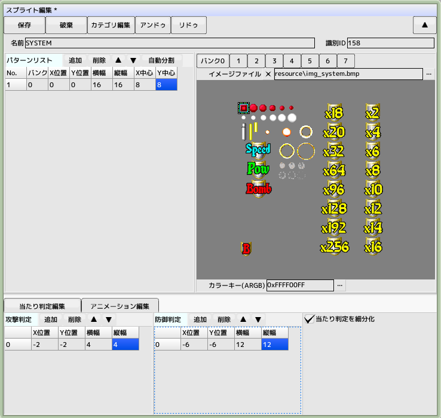
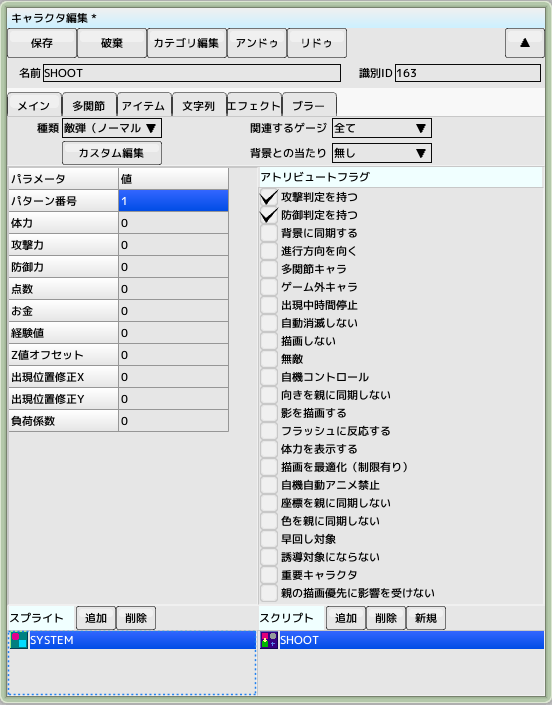
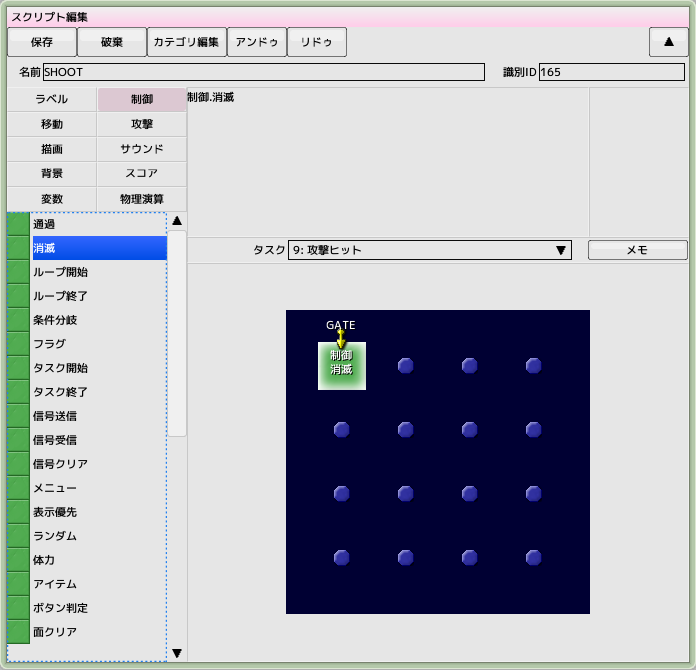
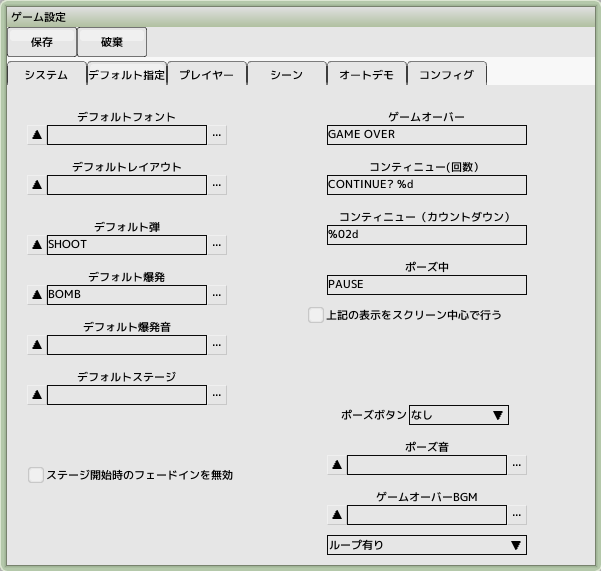
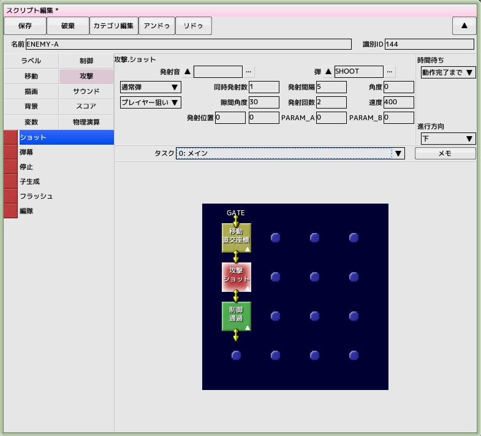

■元のページへ戻る
■元のページへ戻る
6.敵弾を作成する
前回のチュートリアルで作成したプロジェクトファイルを開いておいてください

敵弾用スプライトの作成
スプライトを新規作成し、名前を'SYSTEM'とします
リソースフォルダからimg_system.bmpを登録します
今回は敵弾一つだけパターン番号を登録します(当たり判定を含む)
後々アイテムや誘導弾といったパターンも追加していきます

敵弾用キャラクタの作成
キャラクタを新規作成し、名前を'SHOOT'とします
種類を敵弾（ノーマル）、パラメータを右図のように設定します
スプライト(SYSTEM)とスクリプト(新規)を登録します

敵弾用スクリプトの作成
タスク「0:メイン」に制御グループの通過パネルを置き、時間待ちを動作完了までに設定します
タスク「9:攻撃ヒット」「10:防御ヒット」にゲートを作成してから制御グループの消滅パネルを置きます
何かに攻撃がヒットしたときや、ボムのような攻撃を受けたときに消滅するようになります

デフォルトの弾として登録する
作成したスプライト、キャラクタ、スクリプトを保存して閉じてください
ゲーム設定を開き、デフォルト指定タブをクリックします
その中にあるデフォルト弾の...をクリックして先ほど作成したSHOOTを登録します

敵に弾を撃たせる
以前作成した直進する敵'ENEMY-A'のスクリプトを開きます
右図のように移動パネルと通過パネルの間に隙間を空け（通過パネルをドラッグして下にずらす）
攻撃グループのショットパネルを配置します
パラメータを右図の通りに設定します
弾をSHOOT、発射間隔を5、発射回数2、速度400に設定しています
テスト実行し、敵から弾が自機を狙って発射されていることを確認します
現時点では自機に当たっても破壊されません
■ページ上部へ戻る